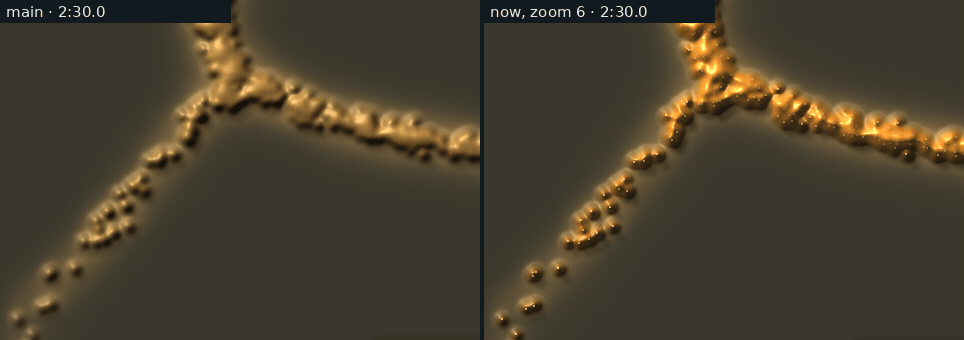
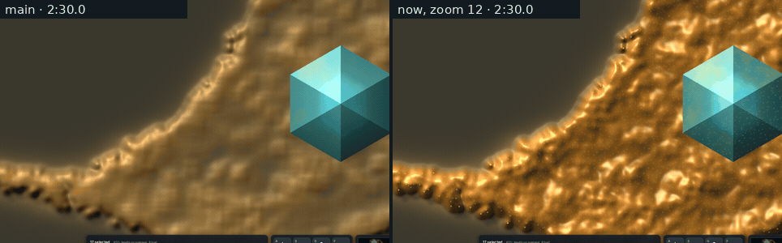
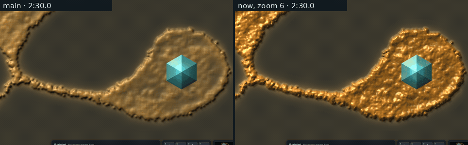
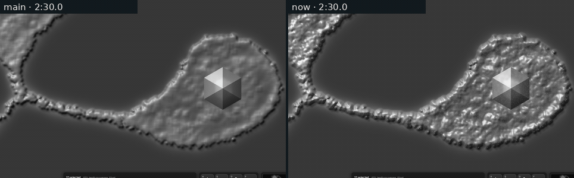
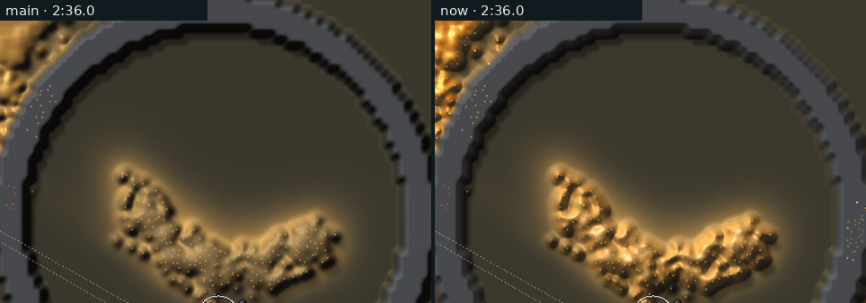
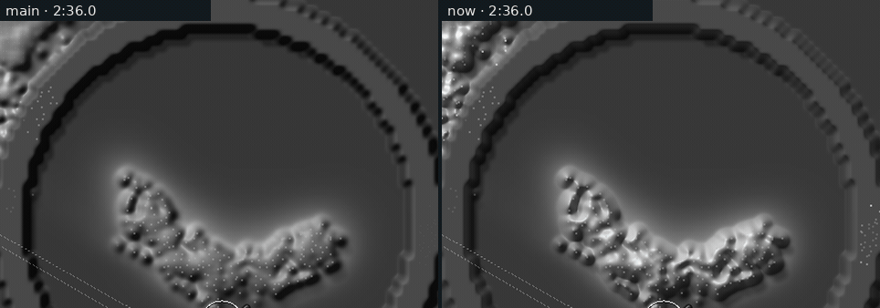

<title>Slime Material</title>
<meta name="claude:viewport-fit-sides" content="cover">
<link rel="preconnect" href="https://fonts.googleapis.com">
<link rel="stylesheet" href="https://fonts.googleapis.com/css2?family=Inter:wght@400;600&family=Space+Grotesk:wght@500;700&display=swap">
<style>
/* Slime material (2026-11-14, the graphics thread): the owner's playtest of
   the sharp slime (lone walkers dim, the middle blurry) and the art
   director's material brief. Labelled, not blind: each film is main against
   this change on the same simulation, not a pick between looks. */
:root {
  --bg: #f3f5f6; --fg: #182024; --muted: #56646b; --line: #d5dde0;
  --panel: #ffffff; --amber: #a86a12; --red: #b2402a;
  --display: "Space Grotesk", "Segoe UI", system-ui, sans-serif;
  --body: "Inter", "Segoe UI", system-ui, sans-serif;
}
@media (prefers-color-scheme: dark) { :root:not([data-theme="light"]) {
  --bg: #0b1114; --fg: #e3eaec; --muted: #93a3aa; --line: #22303a;
  --panel: #111a1f; --amber: #e2a95a; --red: #f08a72; color-scheme: dark } }
:root[data-theme="dark"] {
  --bg: #0b1114; --fg: #e3eaec; --muted: #93a3aa; --line: #22303a;
  --panel: #111a1f; --amber: #e2a95a; --red: #f08a72; color-scheme: dark }
body { background: var(--bg); color: var(--fg); font-family: var(--body); line-height: 1.55;
  padding-left: max(16px, env(safe-area-inset-left, 0px)); padding-right: max(16px, env(safe-area-inset-right, 0px)); padding-block: 28px 48px; margin: 0; }
main { max-width: 1000px; margin: 0 auto; display: grid; gap: 36px; }
h1, h2 { font-family: var(--display); text-wrap: balance; margin: 0; }
h1 { font-size: 1.9rem; }
h2 { font-size: 1.2rem; }
p { margin: 0; max-width: 70ch; }
.lede { color: var(--muted); }
header, section { display: grid; gap: 12px; }
figure { margin: 0; display: grid; gap: 8px; min-width: 0; }
figure img { width: 100%; max-width: 100%; height: auto; border-radius: 4px; border: 1px solid var(--line); display: block; background: #111a1f; }
figcaption { font-size: 0.9rem; color: var(--muted); }
.tag { font-family: var(--display); font-size: 0.85rem; letter-spacing: 0.06em; text-transform: uppercase; color: var(--amber); }
.scroll { overflow-x: auto; min-width: 0; }
table { border-collapse: collapse; font-variant-numeric: tabular-nums; font-size: 0.9rem; }
th, td { text-align: right; padding: 5px 12px 5px 0; border-bottom: 1px solid var(--line); white-space: nowrap; }
th:first-child, td:first-child { text-align: left; }
th { font-family: var(--display); font-weight: 500; color: var(--muted); font-size: 0.78rem; letter-spacing: 0.04em; text-transform: uppercase; }
.note { color: var(--muted); font-size: 0.9rem; }
code { font-size: 0.9em; }
</style>

<main>
  <header>
    <span class="tag">After the sharp-slime playtest</span>
    <h1>The slime looks wet now, and lone walkers stand out</h1>
    <p class="lede">You said the edges looked good but the middle was still blurry, and that single walkers should be brighter. Each film below is the same simulation drawn twice, main on the left and this change on the right. The walker counts match line for line. Frames are 0.1 game seconds apart, played at 10 a second.</p>
  </header>

  <section>
    <h2>A lone walker is a bright point, not a dark bump</h2>
    <p>On main, a walker alone on bare ground was drawn darker than the ground around it: a tall, narrow bump whose far side shaded to black, plus a speck of faint light one pixel wide. Now each walker's speck grows with the zoom (2 pixels at zoom 6, 4 at zoom 12). Its light depends on how many walkers are near it. A walker on its own is lit almost fully, and a walker inside a thick body adds only a faint grain, so the body doesn't turn white. The slope of a bump is also capped, so a bead's shaded side stays brown instead of black.</p>
    <figure>
      
      <figcaption>Zoom 6, the explorers along the fork's lower arm. New test: a lone walker is 170.8 luminance against 55.6 for bare ground (on main, 42.9 against 54.6, darker than the ground).</figcaption>
    </figure>
  </section>

  <section>
    <h2>The middle shows its own structure</h2>
    <p>The dense body took its thickness from a wide walker count, which reads as a smooth, blurry swell. Now it keeps 40% of the sharp count, so the clumps and channels the walkers really form show at the fine grid. The colour also counts walkers directly, so a walker-rich patch with little trail is gold, not a dark film. The walkers inside the body move as a calm grain of light, which is the flow you can see.</p>
    <figure>
      
      <figcaption>Zoom 12, the body round the fork's crystal, 2:30 to 2:33.</figcaption>
    </figure>
    <figure>
      
      <figcaption>Zoom 6, same place. Slime pixels at 2:31: median saturation 83 on main and 119 now; 90th-percentile luminance 149 and 175; glints above 230 luminance 1 and 1,716.</figcaption>
    </figure>
  </section>

  <section>
    <h2>Material: wet gold over the ground</h2>
    <p>The art director's brief was that the slime read as sand against the olive ground. Three changes address it. Thick parts are pushed further from grey and get a tighter, brighter highlight, so a raised vein carries a white glint along its lit side. A thin film is tinted ground, like coloured glass, rather than dim paint. Height rises on a saturating curve, so the body is calm and the veins stand up. Every weight is a smooth function of thickness, so no line is drawn where the film ends.</p>
    <figure>
      
      <figcaption>The same film in grey (style guide rule 2). The slime's median luminance is about the same (113 and 110) and the ground is 55, so the contrast against the ground comes mostly from the highlights. The crystals thread is darkening the ground next.</figcaption>
    </figure>
  </section>

  <section>
    <h2>A cut piece greys gradually</h2>
    <p>Each walker's grey, amber and red now ramp with how stale its news of food is, instead of switching on at the lag. Grey runs from 1 s before the lag to 2 s after it, amber comes in over half a second each side of the lag, and red does the same round the end of the lean. A piece whose walkers all crossed the lag together used to snap from gold to ash in one frame.</p>
    <figure>
      
      <figcaption>The last-stand ring (cut at 2:30), 2:36 to 2:38. Walkers inside: 179 at 2:36, 135 at 2:37, 52 at 2:38. Mean saturation of the piece every 0.1 s: main 67, 67, 67, 66, 66, 66, 66, 64, 63, 56, 52 …; now 86, 82, 79, 78, 76, 75, 74, 68, 65, 57, 52 …, so the fade starts about a second earlier and has no step.</figcaption>
    </figure>
    <figure>
      
      <figcaption>The same in grey.</figcaption>
    </figure>
  </section>

  <section>
    <h2>Cost</h2>
    <div class="scroll">
      <table>
        <thead><tr><th>llvmpipe, 20 s farm hand, 1280 × 800</th><th>Run 1</th><th>Run 2</th></tr></thead>
        <tbody>
          <tr><td>Main, frame p50</td><td>40.5 ms</td><td>41.6 ms</td></tr>
          <tr><td>Now, frame p50</td><td>42.5 ms</td><td>42.9 ms</td></tr>
        </tbody>
      </table>
    </div>
    <p class="note">Builds alternated. About 1.6 ms (4%) on software Vulkan, mostly from larger specks. The 1070 timing waits for the PC. Films: <code>larder-world look=DIR hand=farm seed=1 map=fork centre=420,232,ZOOM</code>, and <code>cut=150,365,240,32 cutsquad=365,264,150,4 centre=365,238,6</code>. Script and logs in <code>Reports/slime-material-2026-11-14/raw/</code>.</p>
  </section>
</main>
